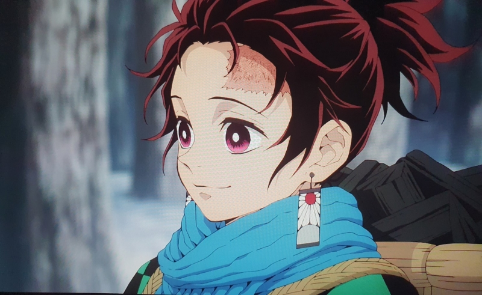

사이버외교사절단을 표방하는 ‘반크’(Vank·Voluntary Agency Network of Korea)가 넷플릭스(Netflix)에 역사 왜곡이 담긴 콘텐츠를 시정하라고 촉구했다
반크는 6일 “최근 넷플릭스를 통해 전 세계에 알려진 일본 애니메이션 ‘귀멸의 칼날’에 욱일기를 연상하는 부분이 있어 문제가 되고 있다”고 밝혔다. 이 애니메이션은 주인공 ‘탄지로’의 귀걸이가 일본 군국주의 상징 ‘욱일기’와 유사하다는 이유로 국내에서 논란이었다. 이후 한국 넷플릭스는 귀걸이 문양이 수정된 콘텐츠를 제공하고 있다.
반크는 “그러나 한국 이외에 호주 등 외국에서 방송되는 넷플릭스에는 여전히 욱일기 모양이 시정 안 되고 있다”며 “넷플릭스가 한국판에서만 욱일기 모양을 시정하고 외국에서는 시정을 안 한 것은 큰 문제”라고 비판했다.
호주에서 거주 중인 한 교민은 반크에 “호주판은 전범기가 있다. 호주 대형마트에서 전범기 문양 옷을 팔다가 교민의 문제 제기로 전량 철수한 사건도 1년여 전 있었는데 참 안타깝다”고 제보했다.
반크는 넷플릭스에 귀멸의 칼날 속 욱일기를 연상케 하는 장면을 해외판에도 동일하게 수정해달라고 항의했다.
반크는 넷플릭스 인기 드라마 ‘베이비시터클럽’에서 전범국 일본 이미지가 세탁되고 있다고 지적했다.
시즌1 6화에서 등장 인물들이 나누는 대화가 제2차 세계대전 당시 일본을 전범국이 아닌 피해 국가처럼 묘사한다는 이유다. 극중 재닌이 동생 클라우디아에게 할머니 과거에 관해 “2차 세계대전 동안 미국은 일본계 미국 시민을 적국인으로 분류했다. 정부는 그들의 집을 빼앗고 포로 수용소에 넣었다”고 설명한 대목이다.
반크는 “미국과 전 세계 청소년들이 동아시아 역사와 일제강점기 한국사를 모르는 상태에서 일본인을 전쟁 피해자로서 동정하게 될 것”이라며 “일본 정부는 국제사회에 전범국 일본 이미지를 세탁하고 ‘원폭 피해국’, ‘전쟁 피해국’이란 이미지를 알리기 위해 오랜 기간 노력해왔다”고 했다.
반크는 넷플릭스에 전범국 일본 역사도 제대로 알릴 수 있도록 설명을 추가해줄 것을 요구했다고 전했다.